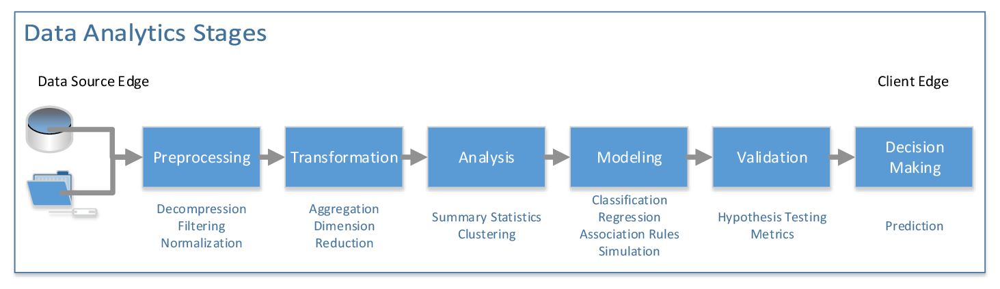
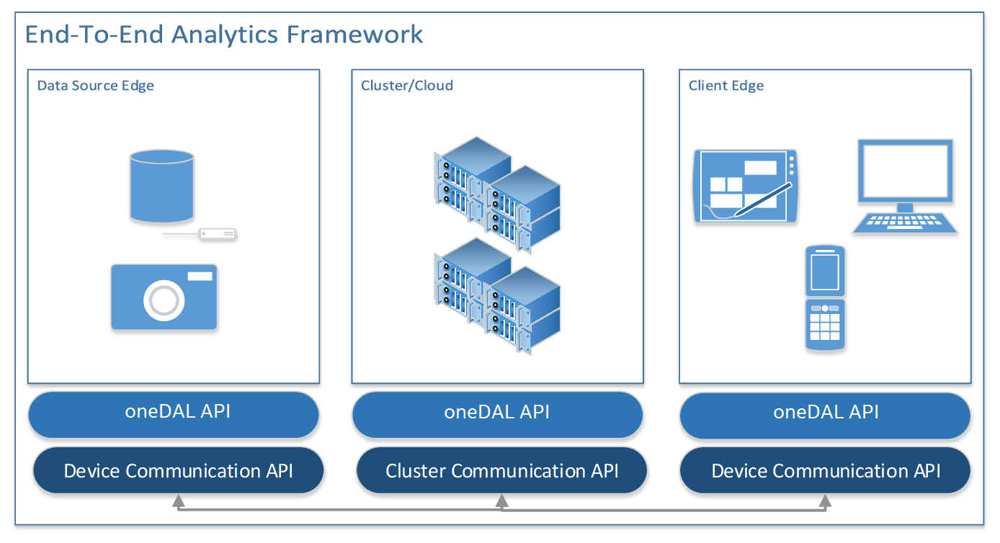

Introduction¶
oneAPI Data Analytics Library (oneDAL) is a library that provides building blocks covering all stages of data analytics: data acquisition from a data source, preprocessing, transformation, data mining, modeling, validation, and decision making.
{kind=link}
oneDAL supports the concept of the end-to-end analytics when some of data analytics stages are performed on the edge devices (close to where the data is generated and where it is finally consumed). Specifically, oneDAL Application Programming Interfaces (APIs) are agnostic about a particular cross-device communication technology and, therefore, can be used within different end-to-end analytics frameworks.
{kind=link}
oneDAL consists of the following major components:
The Data Management component includes classes and utilities for data acquisition, initial preprocessing and normalization, for data conversion into numeric formats (performed by one of supported Data Sources), and for model representation.
The Algorithms component consists of classes that implement algorithms for data analysis (data mining) and data modeling (training and prediction). These algorithms include clustering, classification, regression, and recommendation algorithms. Algorithms support the following computation modes:
Batch processing: algorithms work with the entire data set to produce the final result
Online processing: algorithms process a data set in blocks streamed into the device’s memory
Distributed processing: algorithms operate on a data set distributed across several devices (compute nodes)
Distributed algorithms in oneDAL are abstracted from underlying cross-device communication technology, which enables use of the library in a variety of multi-device computing and data transfer scenarios.
Depending on the usage, algorithms operate both on actual data (data set) and data models:
Analysis algorithms typically operate on data sets.
Training algorithms typically operate on a data set to train an appropriate data model.
Prediction algorithms typically work with the trained data model and with a working data set.
The Utilities component includes auxiliary functionality intended to be used for design of classes and implementation of methods such as memory allocators or type traits.
The Miscellaneous component includes functionality intended to be used by oneDAL algorithms and applications for algorithm customization and optimization on various stages of the analytical pipeline. Examples of such algorithms include solvers and random number generators.
Classes in Data Management, Algorithms, Utilities, and Miscellaneous components cover the most important usage scenarios and allow seamless implementation of complex data analytics workflows through direct API calls. At the same time, the library is an object-oriented framework that helps customize the API by redefining particular classes and methods of the library.